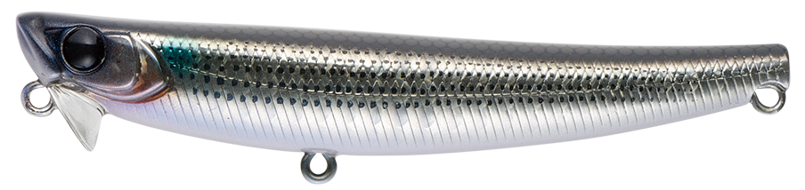
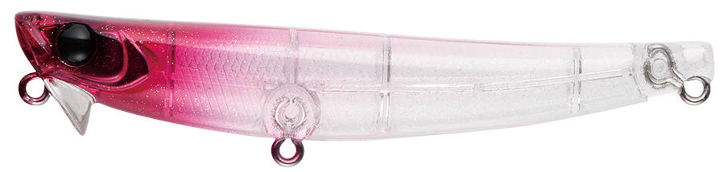
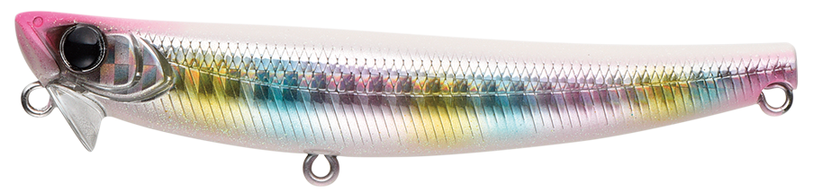
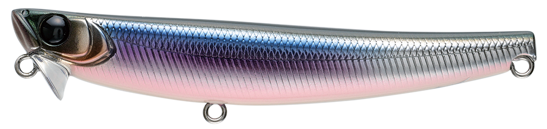

ハイドロアッパー90S
（HYDRO UPPER90S）
ハイドロアッパー90S（HYDRO UPPER90S）はAPIA（アピア）のシンキングペンシルです。
本来は潜らせるためのリップを逆角度に付けた「浮上型」シンペンで、巻くと水を下方向に受け流し、ボディを水面へ押し上げます。90mmのサイズに16gの重さを持たせて遠投できるのに、表層直下をキープできるのが最大の特徴。シャローゲームを得意とするRED中村氏の発想から生まれた1本です。

画像出典:APIA公式HP
スペック
- メーカー
- APIA（アピア）
- タイプ
- シンキングペンシル（浮上型）
- 全長
- 90mm
- 自重
- 16g
- フック
- #6×2
- アクション
- 可変タイトロールアクション
- ターゲット
- シーバス
- 価格
- 1,760円（税込）
▼今すぐチェック
ハイドロアッパー90Sの特徴
「ウェイクでは派手すぎる、シンペンでは深すぎる」——その狭間のレンジ専用機
-
逆角度のリップで巻くと浮き上がる
リップを通常とは逆の角度に設置し、巻くと受けた水を下方向に逃がしてボディを表層直下まで浮き上がらせる。着水後の巻き出しから浮上し、表層直下をレンジキープしてくれる。
-
90mm・16gでジグミノー並みの飛距離
「巻くと浮き上がる」特性のおかげで、90mmのサイズの割に16gの重さを持たせることができ、遠投性に優れる。干潟や汽水湖だけでなく、サーフや磯など外洋の小型ベイトパターンにも対応できる。
-
派手過ぎないベイトライクな泳ぎ
デッド〜スローでは小刻みなロール、ミディアムでは振り幅1cmほどのタイトなシンペンアクション。あえて抑えた動きで、イナッコ・サヨリ・バチ・アミなど、セレクティブになりがちな表層系ベイトパターンに対応する。
ハイドロアッパー90Sの使い方
基本はただ巻き。着水後に巻き始めると逆向きのリップが働いてボディが浮き上がり、表層直下をキープしたまま引いてこられます。
デッド〜スローでは小刻みなロール、ミディアムではタイトなシンペンアクションと、巻き速度で動きが変わるので、ベイトの動きに合わせて速度を調整します。ボイルがあるのにトップやウェイクベイトに出ないときこそ投げたいルアーです。
ハイドロアッパー90Sの得意な状況
イナッコ・サヨリ・ハク・稚鮎など、表層系のベイトを食っている状況が最大の出番。
「ベイトは上ずっているのにトップやウェイク系には出ない、普通のシンペンではレンジが入りすぎる」というシビアな状況で強い1本です。干潟や水深の浅い汽水湖のほか、外洋の磯で根周りや藻場を攻める場面でも活躍します。
ワンポイント
シャローは根掛かりが多いエリアですが、ハイドロアッパー90Sは巻き出しから浮き上がるので、浅い場所でも攻めやすいのが強みです。
ボイルやモジリが見えない状況でも、表層を意識した魚がいそうなら一度通してみる価値があります。
ハイドロアッパーシリーズの使い分け
| モデル | 全長／自重 | 得意な場面 |
|---|---|---|
| ハイドロアッパー55S | 55mm／5.5g | 小型ベイトやライトゲームに |
| ハイドロアッパー90S | 90mm／16g | 表層系ベイトパターンの基準モデル。遠投も得意（本記事のモデル） |
| ハイドロアッパー スリム100S | 100mm／10g | 細身のシルエット。サヨリやバチなど細長いベイトに |
ハイドロアッパーは、ベイトのサイズや形に合わせてサイズとシルエットを選べるシリーズ。まず1本なら、飛距離と使いやすさのバランスが良い90Sがオススメです。
人気カラー
ハイドロアッパー90Sは全15色展開。表層系ベイトパターンでオススメのカラーを厳選して紹介します。

ボライナッコパターンに合わせやすいナチュラル系。

レッドヘッドゴーストレッドヘッドのゴースト系。濁りやナイトでも使いやすい。

コットンキャンディーパール系のアピールカラー。ナイトや濁り潮に。

パニックカタクチカタクチイワシを意識したベイトカラー。
画像出典:APIA公式HP
ハイドロアッパー90Sに似ているルアー
-
 パンチライン80
アピア
詳細はこちら＞
パンチライン80
アピア
詳細はこちら＞
全長80mm・自重13gのフラットヘッドシンペン。S字スラロームとローリングフォールで、ハイドロアッパーより少し下のレンジを探りたいときに。
-
 スウォーム80S
GOTO9
詳細はこちら＞
スウォーム80S
GOTO9
詳細はこちら＞
全長80mm・自重8.6gのシンキングペンシル。表層付近をナチュラルに引けるシンペンとして、ローテーションの選択肢になる。
-
 コモモSF-125
ima
詳細はこちら＞
コモモSF-125
ima
詳細はこちら＞
全長125mm・自重18gのシャローランナー。水面下5〜50cmを投げて巻くだけで攻められ、シャローの定番としてハイドロアッパーと使い分けやすい。